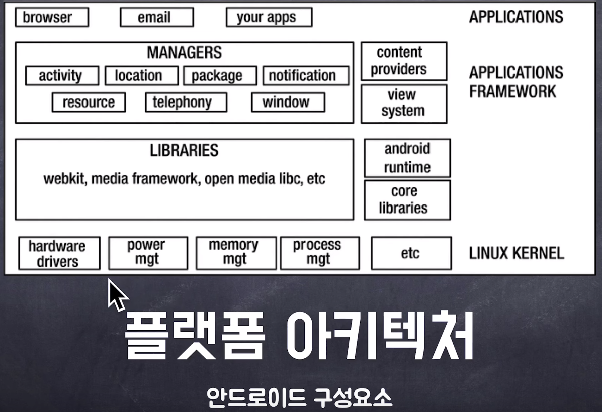
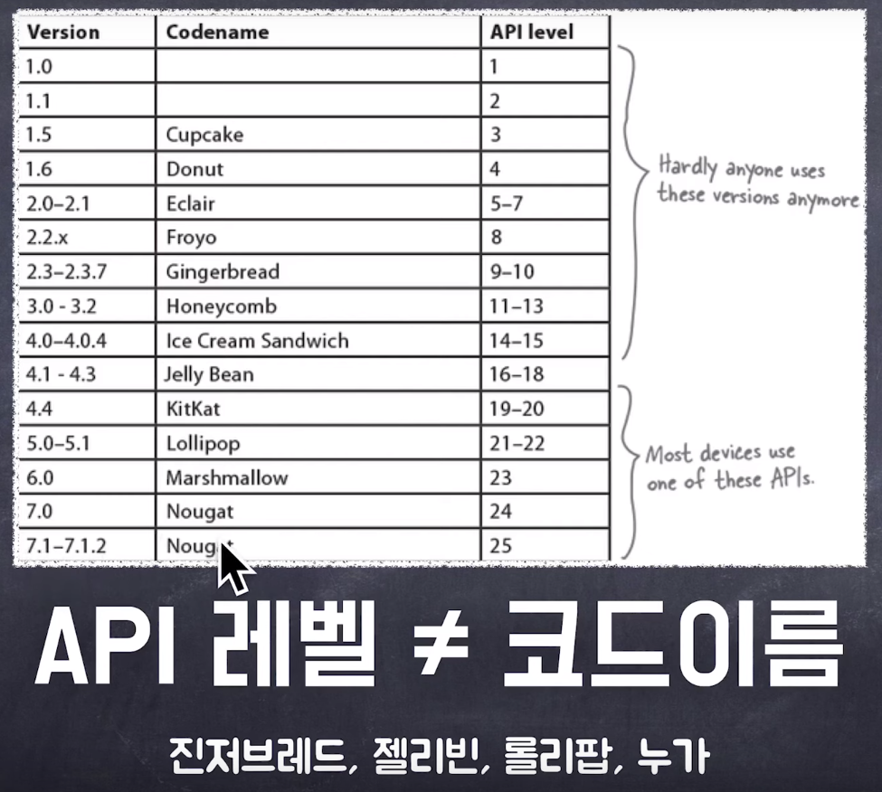
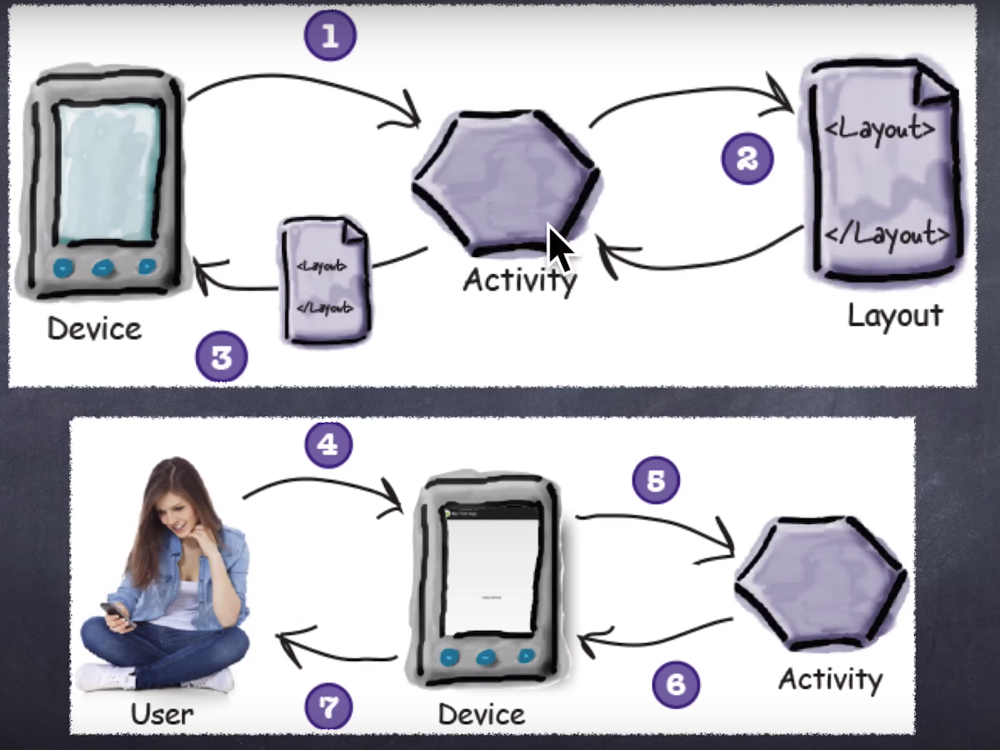
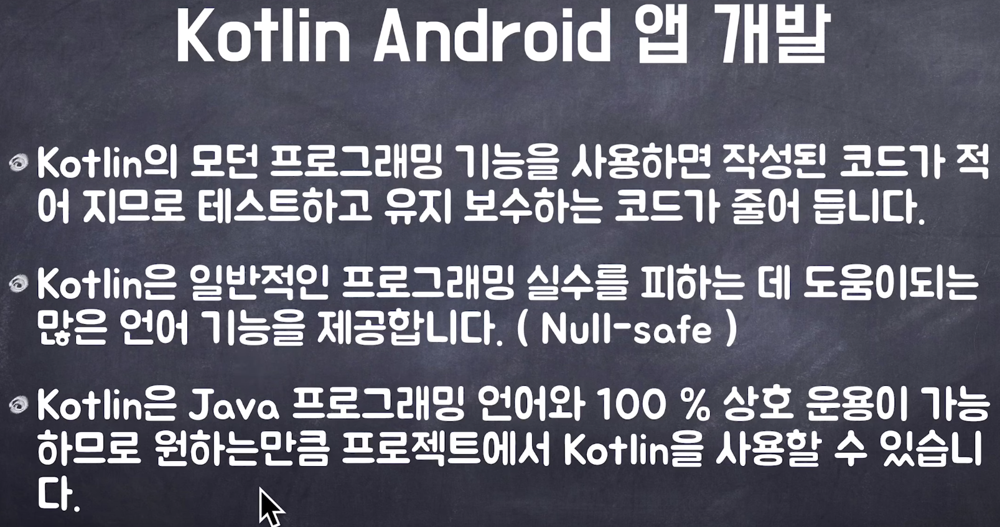

This is personal study note
Copyright and original reference are from:
https://www.youtube.com/watch?v=FLpnnlrVpa8
================================================================================

- 안드로이드는 리눅스 커널 (하드웨어 드라이버 관리, 전원 관리 등) 위에서 동작함
- 리눅스 커널 위에 안드로이드 런타임이 올라가있음 (안드로이드 앱을 구동시켜줌)
- activity 를 만든다
- activity 위에 apps 를 올린다
================================================================================

- 개발 시에는 API level 이 참고됨
================================================================================

- 안드로이드 동작 순서
- 1: 디바이스에서 액티비티를 연다 (안드로이드 런타임이 열여줌)
- 2: 액티비티는 layout 파일을 분석해서 화면 (액티비티)에 뿌려준다
- 3: 뿌려진 액티비티는 디바이스 화면에 표시된다
- 4: 유저가 조작을 디바이스에 한다
- 5: 이벤트를 액티비티가 처리한다
================================================================================
